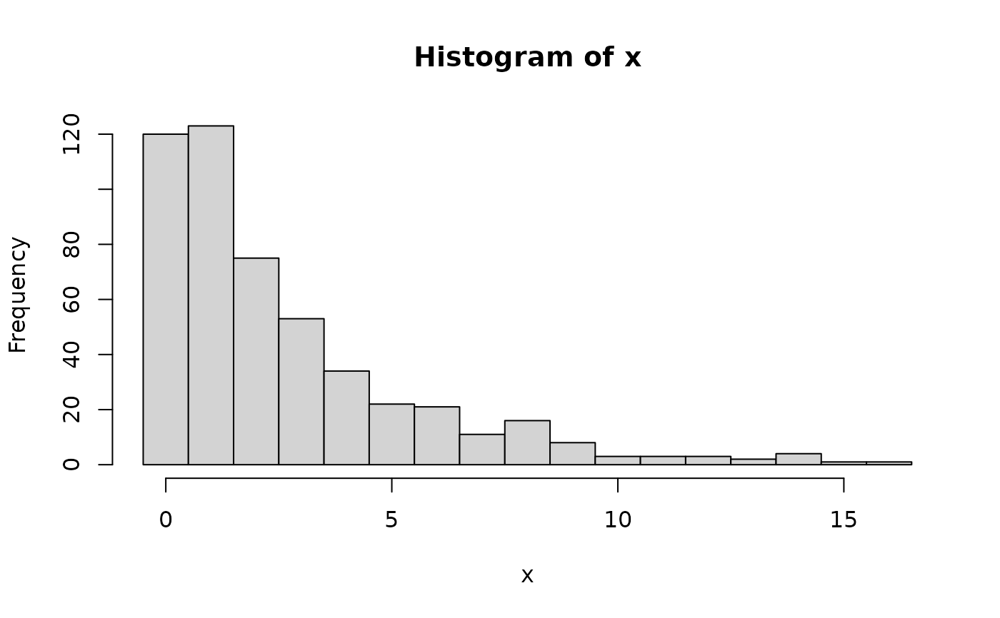

Create a hurdle negative binomial distribution
Source:R/HurdleNegativeBinomial.R
HurdleNegativeBinomial.RdHurdle negative binomial distributions are frequently used to model counts with overdispersion and many zero observations.
Details
We recommend reading this documentation on https://alexpghayes.github.io/distributions3/, where the math will render with additional detail.
In the following, let \(X\) be a hurdle negative binomial random variable with parameters
mu = \(\mu\) and theta = \(\theta\).
Support: \(\{0, 1, 2, 3, ...\}\)
Mean: $$ \mu \cdot \frac{\pi}{1 - F(0; \mu, \theta)} $$
where \(F(k; \mu)\) is the c.d.f. of the NegativeBinomial distribution.
Variance: $$ m \cdot \left(1 + \frac{\mu}{\theta} + \mu - m \right) $$
where \(m\) is the mean above.
Probability mass function (p.m.f.): \(P(X = 0) = 1 - \pi\) and for \(k > 0\)
$$ P(X = k) = \pi \cdot \frac{f(k; \mu, \theta)}{1 - F(0; \mu, \theta)} $$
where \(f(k; \mu, \theta)\) is the p.m.f. of the NegativeBinomial
distribution.
Cumulative distribution function (c.d.f.): \(P(X \le 0) = 1 - \pi\) and for \(k > 0\)
$$ P(X \le k) = 1 - \pi + \pi \cdot \frac{F(k; \mu, \theta) - F(0; \mu, \theta)}{1 - F(0; \mu, \theta)} $$
Moment generating function (m.g.f.):
Omitted for now.
See also
Other discrete distributions:
Bernoulli(),
Binomial(),
Categorical(),
Geometric(),
HurdlePoisson(),
HyperGeometric(),
Multinomial(),
NegativeBinomial(),
Poisson(),
PoissonBinomial(),
ZINegativeBinomial(),
ZIPoisson(),
ZTNegativeBinomial(),
ZTPoisson()
Examples
## set up a hurdle negative binomial distribution
X <- HurdleNegativeBinomial(mu = 2.5, theta = 1, pi = 0.75)
X
#> [1] "HurdleNegativeBinomial(mu = 2.5, theta = 1, pi = 0.75)"
## standard functions
pdf(X, 0:8)
#> [1] 0.25000000 0.21428571 0.15306122 0.10932945 0.07809246 0.05578033 0.03984309
#> [8] 0.02845935 0.02032811
cdf(X, 0:8)
#> [1] 0.2500000 0.4642857 0.6173469 0.7266764 0.8047688 0.8605492 0.9003923
#> [8] 0.9288516 0.9491797
quantile(X, seq(0, 1, by = 0.25))
#> [1] 0 0 2 4 Inf
## cdf() and quantile() are inverses for each other
quantile(X, cdf(X, 3))
#> [1] 3
## density visualization
plot(0:8, pdf(X, 0:8), type = "h", lwd = 2)
## corresponding sample with histogram of empirical frequencies
set.seed(0)
x <- random(X, 500)
hist(x, breaks = -1:max(x) + 0.5)
